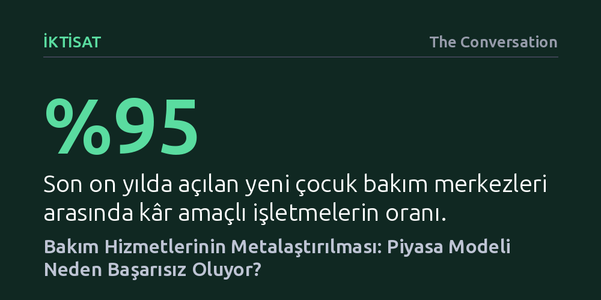

IKTISAT · The Conversation · 2026-10-26
Avustralya'da bakım hizmetlerinin kupon modeliyle piyasalaştırılması, kâr odaklı şirketlerin sektörü ele geçirmesine ve hizmet kalitesinin belirgin biçimde düşmesine yol açtı. Kâr hırsıyla personel giderlerinden kısılan ve planlamadan yoksun bırakılan bu model, en kırılgan kesimlere zarar veriyor.
Bakım gibi insani ve kamusal hizmetlerin serbest piyasa mekanizmalarına ve kâr mantığına havale edilmesinin, rekabet ve verimlilik yerine kurumsal ihmal ve nitelik kaybı doğurduğunu gösteriyor.

İkinci Dünya Savaşı'nın ardından gelişmiş ülkelerde kurulan refah devleti düzeni; çocukların, yaşlıların ve engellilerin bakımını ailelerin ya da hayır kurumlarının omuzlarından alarak kamusal bir sorumluluk haline getirdi. Ancak bu sorumluluğun kurumsallaşma biçimi ülkeler arasında belirgin farklılıklar gösterdi. İskandinav ülkeleri yerel yönetimler aracılığıyla kreşlerden huzurevlerine uzanan doğrudan ve yaygın bir kamu hizmeti ağı kurarken, Avustralya gibi ülkeler düşük vergilendirme politikaları ve muhafazakâr yönetim gelenekleri nedeniyle kiliseler ile sivil toplum kuruluşlarını fonlamayı tercih etti.
1980'li yıllara gelindiğinde nüfusun yaşlanması, kadınların iş gücüne katılımının artması ve toplumsal beklentilerin farklılaşmasıyla bakım hizmetlerine olan talep hızla tırmandı. Ne var ki hükümetler bu talebi doğrudan kamu hizmetlerini genişleterek karşılamak yerine, dönemin hâkim iktisadi yaklaşımı olan neoliberalizm ve Yeni Kamu Yönetimi ilkelerine yöneldi. Devletin asli rolü hizmet sunmaktan çıkıp dış sağlayıcıları finanse etmeye dönüştü; böylece bakım hizmetlerinin özelleştirilmesi ve piyasalaştırılması süreci ivme kazandı.
Avustralya'da çocuk bakımından yaşlı ve engelli desteğine kadar tüm bakım ekonomisine yön veren hâkim sistem, kupon benzeri bir finansman modeli oldu. Bu yapıda devlet, uygun şartları taşıyan yurttaşa belirli bir ödenek tanımlıyor; birey ya da ailesi de bu kaynakla piyasada rekabet eden sağlayıcılar arasından tercih yapıyor. Politika yapıcılar 'müşteri tercihi' ve serbest piyasa rekabetinin hizmet kalitesini yükselteceğini öngörse de devletin kesintisiz kaynak aktarımı, özel sermaye için son derece kazançlı ve risksiz bir pazar yarattı.
Kupon modelinin benimsenmesiyle birlikte kâr amacı güden özel işletmeler bakım sektörünü hızla ele geçirdi. Özellikle gündüz çocuk bakımında güç dengeleri çarpıcı biçimde değişti: 2016 ile 2026 yılları arasında özel şirketlerin sektördeki payı yüzde 62'den yüzde 72'ye yükseldi. Daha da dikkat çekici olanı, son on yılda açılan yeni kreşlerin yüzde 95'ini kâr amaçlı işletmeler oluşturdu. Ülkenin en büyük 25 çocuk bakım sağlayıcısının 21'i kurumsal zincirler haline geldi.
Bakım hizmetlerinin birer kâr merkezine dönüştürülmesi, beraberinde derin yapısal sorunlar getirdi. Hissedar kârını maksimize etmeye odaklanan büyük işletmeler, maliyetleri düşürmek amacıyla en büyük gider kalemi olan personelden tasarruf etme yoluna gitti. Yetersiz kaynaklara sahip denetim kurumlarının uzaktan izlemekte zorlandığı bu yapıda; kural ihlalleri, düşük hizmet standartları ve skandallar peş peşe patlak verdi. Resmi denetim verileri, düşük kalite puanları ve mevzuat ihlallerinde kâr odaklı sağlayıcıların kamu ve vakıf kuruluşlarına göre çok daha kötü bir performans sergilediğini belgeliyor.
Öte yandan devlet merkezi bir planlama yapmadığı için şirketler merkezlerini yalnızca kârlılığın yüksek olduğu varlıklı semtlerde açmayı tercih ediyor. Bunun neticesinde ülkenin dezavantajlı veya kırsal kesimlerinde ailelerin hiçbir hizmet bulamadığı geniş 'bakım çölleri' türedi. Ayrıca kreşlerin finansal birer yatırım aracı gibi şirketler arasında sürekli alınıp satılması, sektörü ve orada bakım alan savunmasız kesimleri derin bir istikrarsızlığa sürükledi.
Yaşanan skandalların ardından kamu otoriteleri denetimleri artıran ve çocuk güvenliğini öne çıkaran yasal adımlar atsa da piyasa zeminini değiştirmeyen palyatif çözümler sorunu çözmekten uzak kalıyor. Piyasa ideolojisinin yol açtığı itibar kaybı ve ağırlaşan regülasyonlar, kamuya ve topluma hizmet eden güvenilir sağlayıcıların da bu parçalı ve yetersiz finanse edilen sistemden çekilmesine yol açıyor.
Bakım krizini aşmak, hizmeti bir tüketim malına indirgeyen piyasa mantığından uzaklaşmayı ve 'toplumsal modele' geçmeyi gerektiriyor. Bu yaklaşım; bakım sağlayıcılarının yerel topluluklarla organik bağlar kurduğu, kâr yerine ihtiyacın gözetildiği, hizmet alanların ve bakım emekçilerinin süreçte gerçek söz hakkına sahip olduğu şeffaf ve dayanışmacı bir düzeni savunuyor. İnsana yakışır bir bakımın ucuza mal edilemeyeceğini kabul eden kamusal bir irade oluşmadıkça, mevcut piyasa mekanizmalarının topluma yüklediği maliyetler artmaya devam edecek.